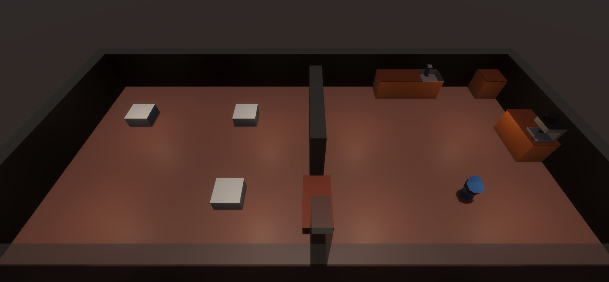
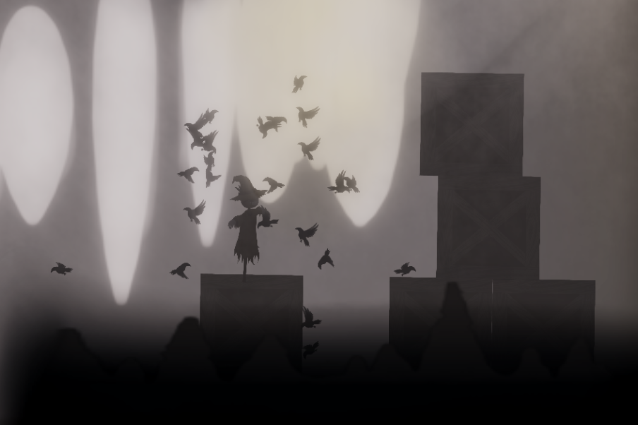
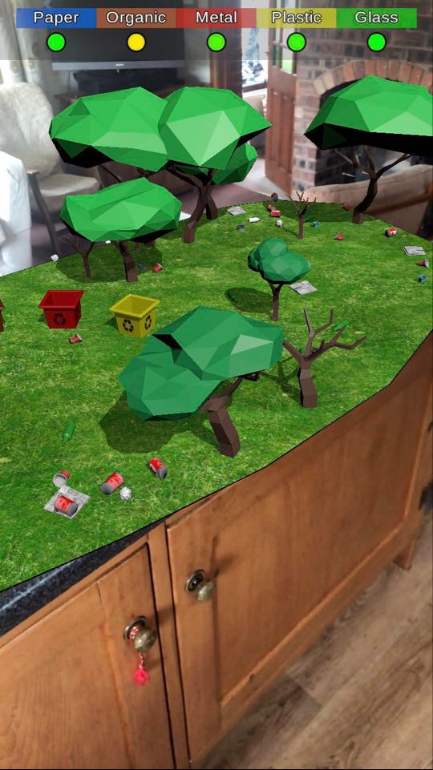
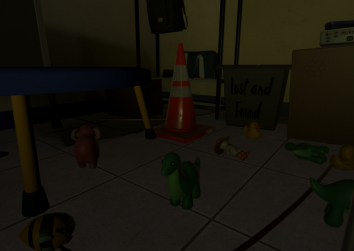
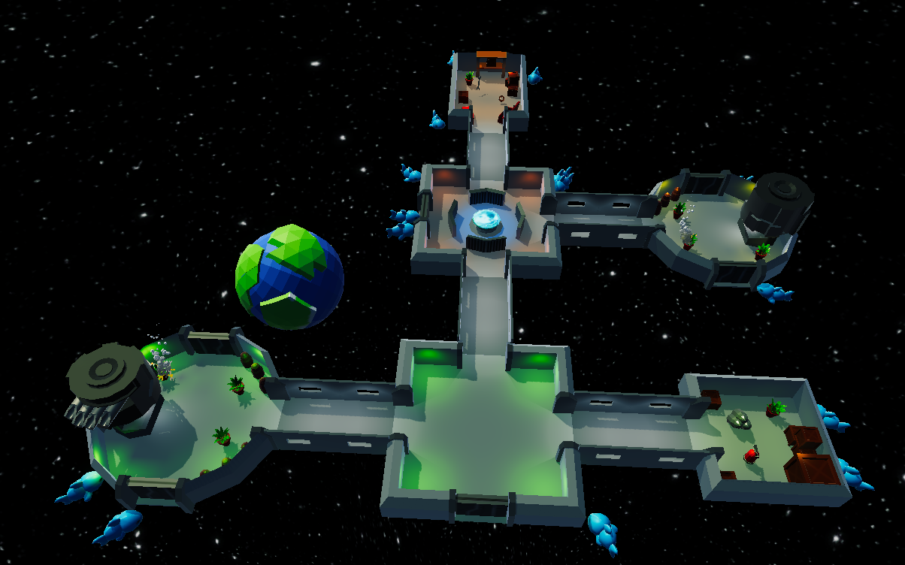
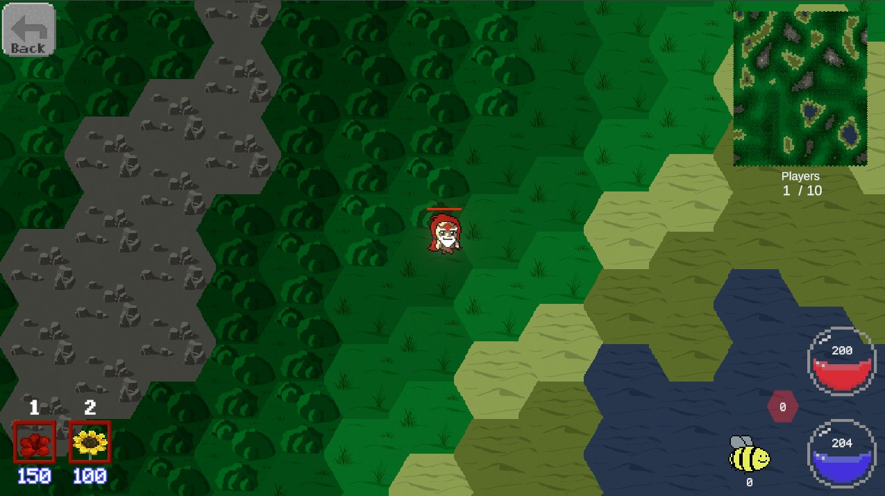
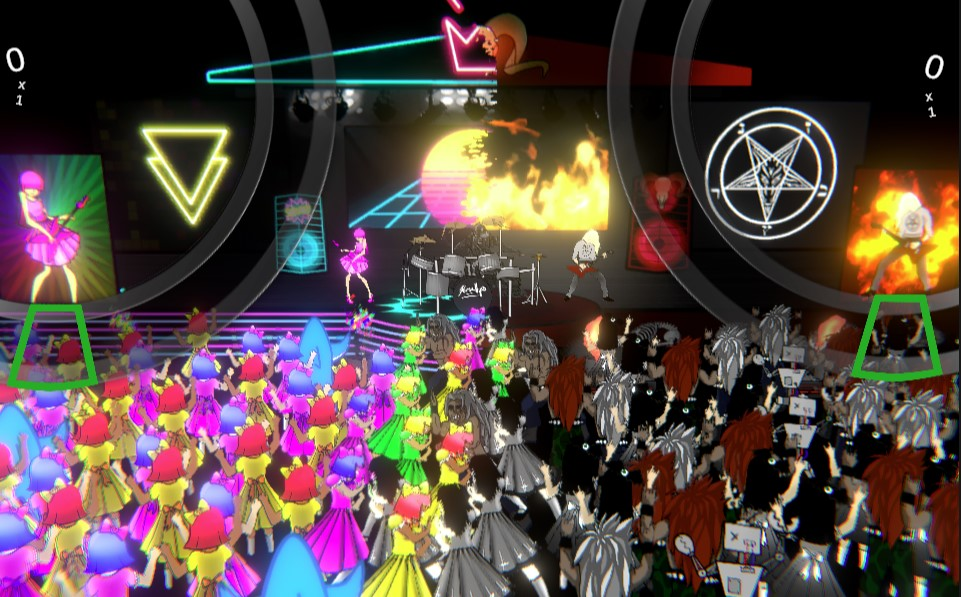

Coffee Shop Simulator
I have been playing a lot of the game PlateUp recently. A fun cross between a rogue like and overcooked. Whilst playing, it prompted me to think about the structure of the systems at play in the game and how the interactions were written. Which made me keen to create my own prototype and explore how I would write it myself. I have also picked up an interest in specialty coffee recently, exploring different origins and roasters as well as different techniques for improving coffee brewing. This inspired me to create coffee shop simulator.
Whilst it is very much in its early stages I believe it illustrates my ability to form a solid structure when creating projects in Unity and consider the implications of my decisions further into the project. I have written its core systems in a way which will allow me to expand the game.
For example, I have used scriptable objects to represent consumables, this means I can easily swap out the models being used and create variants of each consumable. Further into the project I will be able to expand these scriptable objects to hold other data such as price and quality.
By using a component-based structure it promotes abstraction. For instance, having seperate inventory and interactable scripts means I can simply make any object an inventory without having excess clutter of the interactable script. Not only this, it means I can create other scripts such as a cleaning interactable script which will interface with the inventory when interacted with. these interactable scripts can easily be replaced to give different functionality to objects in the game.
I hope to add many features in the future such as money which can be made by serving customers their orders as quick as possible. I also hope to add ways of increasing the quality of the consumables which would gain a higher monetary reward, as is the case with coffee in real life the user should be able to do things such as use higher quality water, use a puck screen and order higher quality coffee beans. These improvements should be bought using the gold generated from playing the game.
Link to GithubThe Last Straw
The last straw was one of the first games I created with my game jam team. We created a puzzle platformer based around a vengeful time travelling scarecrow. I feel the artwork and sound for this game were exceptional; Especially as it was relatively close to the start of my Unity Development career. We used the parallax effect to create atmospheric landscapes and had a great musical piece composed for the background which had many different versions to reflect the mood of the level. Before the game jam I had been researching Craig Reynolds boids algorithm which was an interesting method of simulating flocking entities. it uses three main rules, coherence, separation and alignment. When implemented it creates the most interesting flocking pattern. When we were coming up with ideas for the game, I explained about boid flocking and suggested we make a game about a scarecrow who can control crows to solve puzzles which the team liked the sound of. We implemented a simple version of the flocking algorithm which followed the mouse when the user clicked. It was a super fun experience creating this game and we ended up winning the competition in all of the categories.
Link to itch ioRecyclAR
RecyclAR was developed for the iILRNfuser gamejam in June 2020, focused on Immersive technologies and with the theme "Earth Reborn". Our idea was to create a game to convey how important it was to recycle. You use AR to scan a flat surface on your phone which is then used as the play space. You need to pick up rubbish which is scattered around the landscape and throw it into the correct waste bins which are shown in the key at the top of the app. at the start of the game the grass is a muddy colour and a lot of the trees have no leaves but as you start to recycle and sort through the rubbish the environment starts to clean up. The grass returns to a lush green colour and the trees regrow their leaves. This game jam was a fun opportunity to learn about how to get across concepts to the player through a game's mechanics. The game was released on the play store but the apk can be found on the itchio page linked below.
Link to itch ioA Little Lost
A little lost was a game I believe we created for the global game jam. We wanted to create an asymmetrical VR game as we had recently taken an interest in the genre through a game called Panoptic. We wanted to create a game similar to the popular Garry's Mod game mode "Prop Hunt". Our game would take place in a dark room for the VR player with only a torch and a hammer. Their aim is to prevent the person playing on the pc from getting to the door and escaping the room. You must find the player using the flashlight and hit them with your hammer. It was a challenging experience given our short deadline to produce both a VR and PC game with multiplayer, but we managed. The game is still playable from the itchio link below.
Link to itch ioCollab-O-Station
Collab-O-Station was a game we created for another 3 thing game jam at Hull University. We created a local couch co-op multiplayer game for up to four players where the aim is to keep your spaceship from being eaten by space sharks. players are required to reload the main cannon with ammunition to shoot at the sharks which will head towards the ship. if the sharks manage to reach the ship and deal damage the players are required to put out any fires using the fire extinguishers and patch up any holes with duct tape. Also, occasionally the main cannon will break down and the players are required to get the spanner and fix it. This was a fun experience at using unity's (at the time) new input system which allowed us to easily add controller support and have the controllers assigned to each character.
Link to itch ioDruidzio
In 2021 I competed in the 3 thing game jam at Hull University. As part of my team, we created a fun IO style game where the aim is to claim as many tiles as possible and wipe out your opponents. With there being two main developers working on this project we worked closely on a lot of the core systems with me taking a focus on the placing of objects and the firing system for the towers. While Game jams are not the best place for creating well written maintainable code, they are great for trying new ideas in games and exploring how to implement systems which you may not have tried before.
Link to itch ioDouble Booked
Double booked was a game we created in a 2019 game jam which taught me a lot about time management and the critical path with project management. Our idea for the game was to create a multiplayer rhythm-based game where players compete to take over the dancefloor. If you hit the correct buttons in time with the music, you begin to increase your score and if you hit it at exactly the right time you can start to build a multiplier. One player wins when their score is a certain amount higher than the other player. When developing this game, we had the core concept but the other developer and myself were keen that we could push ourselves and create a custom track creation tool alongside the game which we started work on towards the start of the game jam. it proved a much bigger task than we initially expected meaning when we came to actually creating the main game, we had far less time than we had hoped. This led to rushed programming and many bugs. Whilst we managed to create a game at the end of the day, it lacked polish and wasn't much fun to play. This taught me a lot about focusing on the critical path of the project, the track editor should have been a stretch goal once we had created a great core game.
Link to itch io